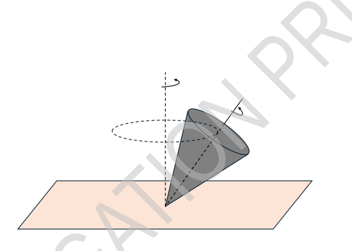

Physics of Weighing Scales
Various scales for measuring the mass of objects are used in daily life. This question is about the physical principles related to the beam balance, the Roberval balance. While these balances look similar, they have slightly different structures and behave differently.
We assume that small friction at the pivots allows the balance to eventually come to rest. However, this friction is sufficiently small that it does not affect the equilibrium angle determined from torque balance. Therefore, friction and air resistance may be neglected in the calculations.
A. Sensitivity of the Beam Balance (2.5 pts)
 Fig.1
Fig.1
A beam balance consists of a beam (lever arm) that rotates about a fixed axis (pivot or fulcrum) and two pans of equal mass suspended from each side of the beam. If the masses placed on the pans differ, the beam tilts toward the heavier side to reach equilibrium.
During the motion of the beam, the suspended pans may swing. Although the force exerted by the system consisting of the pan and the object on the beam may vary over time due to this swinging, we approximate the force as the total weight of the pan and the object, neglecting the swinging effect.
If the beam tilts at a large angle for even a small mass difference, the scale is considered sensitive. Part A of the question examines the issue of sensitivity.
The beam is assumed to be a flat sheet with negligible thickness. Let be the fixed point, and and be the points where the left and right pans are suspended, respectively. The center of mass of the beam coincides with point , as in Fig.2. The axis of rotation passes through and is perpendicular to the beam. The physical parameters and variables that may be related to the beam balance and its sensitivity are as follows.
- : the vertical distance between and the line connecting and
- : the horizontal distance from the perpendicular bisector passing through to points and
- : gravitational acceleration
- : mass of the beam
- : total mass of the left pan and its load
- : total mass of the right pan and its load
When , the beam tilts counter-clockwise by an angle to reach equilibrium.
 Fig. 2.
Fig. 2.
A.1 (0.3 pt) When the beam is tilted by an angle counter-clockwise from the horizontal, find the magnitude of the torque about exerted by the left pan and its load, taking the counter-clockwise direction as positive.
A.2 (0.3 pt) When the beam is tilted by an angle counter-clockwise from the horizontal, find the torque exerted by the right pan and its load (total mass ) that tends to rotate the beam clockwise.
A.3 (0.4 pt) Express the tilt angle at equilibrium in terms of the given variables and parameters.
A.4 (0.3 pt) To make the scale more sensitive (a larger for a small mass difference), which of the following conditions for and is correct? (Selecting an incorrect option will result in a 0.1-point deduction.)
- Larger or larger leads to a larger .
- Smaller or smaller leads to a larger .
- Larger or smaller leads to a larger .
- Smaller or larger leads to a larger .
The beam of a commercially available beam balance is often made so that the rotation axis (pivot point ) is higher than the center of mass (CM) of the beam. However, making the beam this way reduces the sensitivity of the beam balance. To solve this problem and design a more sensitive scale, we intend to change the structure of the beam. As a candidate, the beam is designed by modifying it so that the pivot point () of the beam is below the center of mass (CM) of the beam as shown in Fig.3. Let the pivot point of the beam positioned at a distance underneath the center of mass. The beam is assumed to be a flat sheet with negligible thickness. The meanings of , , , , , , , for the scale are the same as in the previous problem.
 Fig.3
Fig.3
A.5 (0.8 pt) When the beam tilts by an angle from the horizontal to reach equilibrium, express the tilt angle in terms of the given variables and parameters.
A.6 (0.4 pt) Obtain the condition under which the beam reaches a stable equilibrium angle . Express the condition as an inequality independent of .
B. Basic Model of Roberval Balance (3.6 pts)
 Fig.4
Fig.4
The Roberval balance uses a parallel-linkage structure, where the pans are connected to two horizontal beams (upper and lower). These two beams are joined to the pans by pivots, which act like hinges. This special connection allows each pan of two pivots to stay perfectly vertical even when the beams tilt (Fig.4). As the beams rotate, the pans move together in a synchronized way. A unique feature of this design is that the balance depends only on the total mass on each side; it does not matter where you place the weights on the pans. The physical parameters, variables and notations that may be related to the beam balance is as follows (Fig.5).
- : fixed pivots for the two horizontal beams
- : the moment of inertia of the upper beam about its axis of rotation
- : the moment of inertia of the lower beam about its axis of rotation
- : the distance from the central pivot to the pan suspension point
- : horizontal offsets of the weights from the center of the left and right pans, respectively.
- : mass of each pan
- : mass of the load placed on the left and right pans, respectively. ()
- : gravitational acceleration.
Assume that the center of mass (CM) of each beam coincides with its pivot and that pivots of pans and pivot of the beam lays on one line.
 Fig.5
Fig.5
B.1 (0.3 pt) Calculate the total potential energy of the system , when the beam is tilted counter-clockwise by an angle from the horizontal (). Define the potential energy to be zero at the initial horizontal position.
B.2 (0.5 pt) Express the total kinetic energy of the system in terms of the given variables and parameters and the angular velocity .
B.3 (0.6 pt) Obtain the second-order differential equation governing the rotation angle .
The angular acceleration at the instant the beam is released from the horizontal position is as follows:
B.4 (1 pt) At the instant with zero initial velocity, let be the magnitudes of the vertical components of forces acting between the left pan and the upper and lower beams, respectively, and similarly, let be the magnitudes of the vertical components of the forces for the right pan. Calculate the values of in terms of the given variables and parameters.
B.5 (0.6 pt) Assuming that all components of the balance, including the beams and pans, are rigid bodies, determine whether each of the following forces can be calculated at the moment of release. (Answer with Yes, No, or blank for each. A penalty of 0.1 points will be applied for each incorrect answer.)
- Vertical component of force exerted by the central pivot on the upper beam
Set up all the necessary relational equations required to solve this problem. Note that you are only required to provide the forms of the equations; explicit final calculations are not necessary.
B.6 (0.6 pt) Let be the mass of the balance without any weights. Weights of mass and () are placed on the left and right pans, respectively. The beam is initially held horizontal by hand and then released. Find the normal force exerted by the floor on the balance immediately after release.
C. Practical Model of Roberval Balance (3.9 pts)
In the basic model of Roberval balance discussed in Part B, a mass imbalance causes continuous angular acceleration, making it impossible to determine a static equilibrium angle. In contrast, a practical Roberval balance reaches a stable equilibrium at a specific tilt angle depending on the mass difference. In Part C, we analyze the physical structure of such practical Roberval balances.
To calculate the equilibrium angle as a function of the mass difference, consider the following variables and parameters:
- Upper Beam: The pivot point (fixed axis of the beam) is located at a vertical distance directly above the beam’s center of mass. The beam has a mass and a moment of inertia about its pivot (fixed axis).
- Lower Beam: The pivot point (fixed axis of the beam) coincides with the beam’s center of mass. The beam has a moment of inertia about its pivot (fixed axis).
- (): the combined mass of the pan and any objects placed upon it for the left and right sides, respectively. (Please note the difference in notation from part B.)
- : the horizontal distance from the perpendicular bisector passing through the central pivot to the pan suspension point
- : gravitational acceleration.
It is assumed that the weights remain stationary relative to the pans and move in unison with them and that pivots of pans and pivot of the beam lays on one line.
C.1 (1.4 pt) With two weights of different masses placed on the pans (), the beam is initially held in a horizontal position and then released from rest. In the situation, the second-order differential equation of motion for the tilt angle takes the form: . Determine the coefficients , and in terms of the given variables and parameters. Set at the horizontal position.
C.2 (1.9 pt) When the balance is at its equilibrium state (), a slight disturbance causes the beams and pans to oscillate about the equilibrium angle. To analyze this small oscillation, we define a new variable . By approximating the equation of motion obtained in Part C.1, derive the governing equation for in terms of the given variables and parameters. The answer must not include .
C.3 (0.6 pt) If the total mass is constant, determine how the mass should be distributed between the pans to maximize the period of small oscillations. Calculate the period of small oscillations in the limit where .
Fonte: Testo (PDF) — p.1 Topic: Rigid Body Statics, Rotational Dynamics Metodi: Torque & Angular Momentum Analysis, Free-Body Diagram, Energy Conservation Method, Simple Harmonic Motion Analysis Competenze: Physical Reasoning, Diagrammatic Reasoning Objects: Beam, Lever
Fisica delle pesanti
Le varie scale per misurare la massa degli oggetti sono utilizzate nella vita quotidiana. Questa domanda riguarda i principi fisici relativi all’equilibrio del fascio, l’equilibrio Roberval. Sebbene questi bilanci sembrino simili, hanno strutture leggermente diverse e si comportano in modo diverso.
Supponiamo che un piccolo attrito ai punti di rotazione permetta all’equilibrio di riposare. Tuttavia, questo attrito è sufficientemente piccolo da non influenzare l’angolo di equilibrio determinato dall’equilibrio della coppia. Pertanto, nel calcolo possono essere trascurate le condizioni di attrito e di resistenza all’aria.
A. Sensibilità della bilancia del fascio (2,5 pts)
Fig.1
Un equilibrio del fascio consiste in un fascio (braccio di leva) che ruota attorno ad un asse fisso (pivot o fulcro) e due parti di massa uguale sospesi da ogni lato del fascio. Se le masse posizionate sulle cassette differiscono, il fascio si inclina verso il lato più pesante per raggiungere l’equilibrio.
Durante il movimento del fascio, le vasche sospese possono oscillare. Sebbene la forza esercitata dal sistema costituito dalla padella e dall’oggetto sul fascio possa variare nel tempo a causa di questa oscillazione, si approssima la forza come il peso totale della padella e dell’oggetto, trascurando l’effetto di oscillazione.
Se il fascio si inclina ad un’angolazione ampia anche per una piccola differenza di massa, la scala è considerata sensibile. La parte A della domanda esamina la questione della sensibilità.
Si presume che il raggio sia un foglio piatto di spessore trascurabile. Il punto fisso è e il punto di sospensione è e il punto di sospensione è , rispettivamente, il punto di sospensione delle pannelle sinistra e destra. Il centro di massa del fascio coincide con il punto , come in figura 2. L’asse di rotazione passa attraverso ed è perpendicolare al fascio. I parametri fisici e le variabili che possono essere correlati al bilanciamento del fascio e alla sua sensibilità sono i seguenti:
- : la distanza verticale tra e la linea di collegamento e
- : la distanza orizzontale dal bisettore perpendicolare che passa attraverso ai punti e
- : accelerazione gravitazionale
- : massa del fascio
- : massa totale della vasca sinistra e il suo carico
- : massa totale della vasca destra e il suo carico
Quando , il fascio si inclina in senso antiorario con un angolo per raggiungere l’equilibrio.
Fig. 2.
Quando il fascio è inclinato da un angolo contro il senso dell’orologio dall’orizzontale, trovare la grandezza della coppia di esercitata dalla pannella sinistra e il suo carico, prendendo come positiva la direzione contro il senso dell’orologio.
Quando il fascio è inclinato da un angolo contro il senso orologio orizzontale, si trova la coppia esercitata dalla pannella destra e il suo carico (massa totale ) che tende a ruotare il fascio in senso orologio.
A.3 *(0,4 pt) * Esprimere l’angolo di inclinazione in equilibrio in termini di variabili e parametri dati.
A.4 *(0,3 pt) * Per rendere la scala più sensibile (una maggiore per una piccola differenza di massa), quale delle seguenti condizioni per e è corretta? (Se si sceglie un’opzione sbagliata si deriverà in una deduzione di 0,1 punti.)
- Un più grande o un più grande porta ad un più grande.
- Una più piccola o più piccola porta ad un più grande.
- Un più grande o un più piccolo porta ad un più grande.
- Una dimensione più piccola o più grande porta ad un più grande.
Il fascio di un fascio di equilibrio commerciale è spesso realizzato in modo tale che l’asse di rotazione (punto di rotazione ) sia superiore al centro di massa (CM) del fascio. Tuttavia, la realizzazione del fascio in questo modo riduce la sensibilità dell’equilibrio del fascio. Per risolvere questo problema e progettare una scala più sensibile, intendiamo cambiare la struttura del fascio. Il fascio è progettato modificandolo in modo che il punto di rotazione () del fascio sia inferiore al centro di massa (CM) del fascio come mostrato nella figura 3. Il punto di rotazione del fascio deve essere posizionato a una distanza sotto il centro di massa. Si presume che il raggio sia un foglio piatto di spessore trascurabile. I significati di , , , , , , , per la scala sono gli stessi del problema precedente.
Fig.3
Quando il fascio si inclina da un angolo orizzontale fino all’equilibrio, esprimere l’angolo di inclinazione in termini di variabili e parametri dati.
**A.6 ** *(0,4 pt) * Ottenere la condizione in cui il fascio raggiunge un angolo di equilibrio stabile . Esprimere la condizione come una disuguaglianza indipendente da .
B. Modello di base del saldo roberval (3,6 pts)
*Fig.4 *
L’equilibrio Roberval utilizza una struttura di collegamento parallelo, in cui le pentole sono collegate a due travi orizzontali (alto e basso). Questi due travi sono collegati alle pentole da pivot, che agiscono come cerniere. Questa speciale connessione consente a ciascuna pannella di due pivot di rimanere perfettamente verticale anche quando i fasci sono inclinati (Fig.4). Mentre i fasci ruotano, le cassette si muovono insieme in modo sincronizzato. Una caratteristica unica di questo disegno è che l’equilibrio dipende solo dalla massa totale su ciascun lato; non importa dove si collocano i pesi sulle pentole. I parametri fisici, le variabili e le notazioni che possono essere correlate al bilanciamento del fascio sono i seguenti (Fig. 5).
- : pivot fissi per i due travi orizzontali
- : il momento di inerzia del fascio superiore intorno al suo asse di rotazione
- : il momento di inerzia del fascio inferiore intorno al suo asse di rotazione
- : distanza dal pivot centrale al punto di sospensione della pan
- : compensazioni orizzontali dei pesi dal centro delle vasche e delle vasche destre, rispettivamente.
- : massa di ciascuna scatola
- : massa del carico posto rispettivamente sulle vasche sinistra e sulla destra. ()
- : accelerazione gravitazionale.
Supponiamo che il centro di massa (CM) di ogni fascio coincida con il suo pivot e che i pivot delle padelle e il pivot del fascio si trovino su una linea.
Fig.5
B.1 *(0,3 pt) * Calcolare l’energia potenziale totale del sistema , quando il fascio è inclinato contro il senso orario da un angolo orizzontale (). Definire l’energia potenziale come zero nella posizione orizzontale iniziale.
B.2 (0,5 pt) Esprimere l’energia cinetica totale del sistema in termini di variabili e parametri dati e velocità angolare .
**B.3 ** *(0,6 pt) * Ottieni l’equazione differenziale di secondo ordine che regola l’angolo di rotazione .
L’accelerazione angolare nel momento in cui il fascio viene rilasciato dalla posizione orizzontale è la seguente:
B.4 *(1 pt) * In un istante con velocità iniziale zero, siano le magnitudini delle componenti verticali delle forze che agiscono tra il pannello sinistro e il fascio superiore e inferiore, rispettivamente, e allo stesso modo siano le magnitudini delle componenti verticali delle forze per il pannello destro. Calcolare i valori di in termini di variabili e parametri dati.
B.5 (0,6 pt) Supponendo che tutti i componenti del bilanciatore, compresi i fasci e le cassette, siano corpi rigidi, si determina se ciascuna delle seguenti forze può essere calcolata al momento del rilascio. (Risponi con sì, no o bianco per ciascuna. Per ogni risposta errata verrà applicata una pena di 0,1 punti.)
- Componente verticale della forza esercitata dal pivot centrale sul fascio superiore
Si possono creare tutte le equazioni relazionali necessarie per risolvere questo problema. Si noti che è richiesto di fornire solo le forme delle equazioni; non sono necessari calcoli definitivi espliciti.
**B.6 ** *(0,6 pt) * sia la massa del bilanciatore senza alcun peso. I pesi di massa e () sono posizionati rispettivamente sulle vasche sinistra e destra. Il fascio viene inizialmente tenuto orizzontale a mano e poi rilasciato. Trova la forza normale esercitata dal pavimento sulla bilancia immediatamente dopo il rilascio.
C. Modello pratico di equilibrio roberval (3.9 pts)
Nel modello di base dell’equilibrio Roberval discusso nella parte B, uno squilibrio di massa provoca un’accelerazione angolare continua, rendendo impossibile determinare un angolo di equilibrio statico. Al contrario, un equilibrio Roberval pratico raggiunge un equilibrio stabile ad un angolo specifico di inclinazione a seconda della differenza di massa. Nella parte C, analizziamo la struttura fisica di tali equilibri Roberval pratici.
Per calcolare l’angolo di equilibrio in funzione della differenza di massa, si devono considerare le seguenti variabili e parametri:
- **Raccio superiore: ** Il punto di rotazione (asse fisso del fascio) si trova a una distanza verticale direttamente sopra il centro di massa del fascio. Il fascio ha una massa e un momento di inerzia intorno al suo pivot (asse fisso).
- **Fonte inferiore: ** Il punto di rotazione (asse fissa del fascio) coincide con il centro di massa del fascio. Il fascio ha un momento di inerzia intorno al suo pivot (asse fisso).
- (): la massa combinata della padella e di tutti gli oggetti che si trovano su di essa per i lati sinistro e destro, rispettivamente. (Si prega di notare la differenza di notazione della parte B.)
- : la distanza orizzontale dal bisettore perpendicolare che passa attraverso il pivot centrale fino al punto di sospensione della panchina
- : accelerazione gravitazionale.
Si presume che i pesi rimangano statici rispetto alle pentole e si muovano all’unisono con loro e che i pivot delle pentole e il pivot del fascio si trovino su una linea.
C.1 *(1.4 pt) * Con due pesi di diverse masse posizionate sulle cassette (), il fascio viene inizialmente tenuto in posizione orizzontale e poi rilasciato dal riposo. In questa situazione, l’equazione differenziale di movimento di secondo ordine per l’angolo di inclinazione assume la forma: . Determinare i coefficienti , e in termini di variabili e parametri dati. Impostare nella posizione orizzontale.
**C.2 ** *(1,9 pt) * Quando l’equilibrio è in stato di equilibrio (), un leggero disturbo fa oscillare i fasci e le vaselle intorno all’angolo di equilibrio. Per analizzare questa piccola oscillazione, definiamo una nuova variabile . Approximando l’equazione di movimento ottenuta nella parte C.1, derivare l’equazione di governo per in termini di variabili e parametri dati. La risposta non deve includere .
Se la massa totale è costante, determinare come la massa deve essere distribuita tra le cassette per massimizzare il periodo di piccole oscillazioni. Calcolare il periodo di piccole oscillazioni nel limite in cui .
Fonte: Testo (PDF) — p.1 Topic: Rigid Body Statics, Rotational Dynamics Metodi: Torque & Angular Momentum Analysis, Free-Body Diagram, Energy Conservation Method, Simple Harmonic Motion Analysis Competenze: Physical Reasoning, Diagrammatic Reasoning Objects: Beam, Lever
Diffraction of X-rays by Structured and Evolving Targets (10 points)
Note
- Vectors are denoted by bold symbols (e.g., , ).
- Assume that absorption is neglected and that the electric field is polarized perpendicular to the plane of incidence.
X-ray diffraction patterns arise because many tiny “wave sources” within a crystal interfere, and we can predict this by adding their complex amplitudes with the correct phases. Consider a monochromatic wave characterized by a (real) amplitude and a phase . We define the complex amplitude as
so that the (real) amplitude of the wave is the magnitude (absolute value) of , and is its phase. Thus conveniently encodes both magnitude and phase in a single complex number. In this problem set, we define a dimensionless intensity by the squared magnitude of the total complex amplitude:
Common experimental and geometric proportionality factors, such as detector response, incident-beam normalization, and common propagation factors, are absorbed into this definition. By contrast, the single-electron scattering amplitude is retained explicitly as the amplitude scale for scattering from one point electron.
When a crystalline material is exposed to an incident wave, the wave is diffracted by the crystal lattice and the diffracted parts interfere with one another. The intensity of the resulting diffracted wave can be calculated by adding the complex amplitudes of the individual diffracted waves, taking into account the phase differences between them, and then computing the squared magnitude of the resulting total complex amplitude. Diffraction primarily arises from interactions with electrons, and contributions from heavier particles such as nuclei are typically negligible. The amplitude of the wave diffracted by a single point electron depends only on , the distance from the electron to the detector. Since is much larger than the dimensions of the sample, its variation across the sample can be neglected. Therefore, the total diffracted wave can be accurately determined by properly accounting for the phase differences between individual diffracted waves, while their amplitudes are assumed to be constant.
Let and denote the wavevectors of the incident and diffracted waves, respectively. An incident plane wave with wavevector is diffracted into a wave with wavevector . The momentum transfer is defined as
and their magnitudes are assumed to be equal, because the wavelength is unchanged:
Part A: Diffraction from two electrons treated as point particles (2.0 pts)
Consider two point electrons located at positions and , and define . A detector is located at , and we define . A plane wave is incident on the two electrons, and the diffracted wave is observed in the far field along the direction . In part A, the common time-dependent factor is suppressed, since only relative spatial phases are relevant.
A.1 (0.6 pt) Under the far-field approximation, , keep only the leading-order term in and write the outgoing geometric path difference, , in terms of and , or equivalently .
A.2 (0.4 pt) Using your result from A.1 and accounting for the position-dependent phase of the incident wave at and , find the phase difference between the two diffracted contributions at the detector, expressed in terms of and . The phase difference is defined as , where and are the phases of the contributions from the electrons at and .
A.3 (0.6 pt) Express the total complex amplitude of the diffracted wave from these two electrons in terms of and . You may ignore any overall common phase factor, since it does not affect the intensity. Assume that the real amplitude of a diffracted wave from a single point electron is a constant , independent of position.
A.4 (0.4 pt) Express the intensity of diffracted waves from those two electrons in terms of and .
Part B: Finite longitudinal coherence (phase-jump model) (2.3 pts)
Consider two point-like electrons located at positions and , with . A beam of wavelength (so and ) illuminates the electrons, and the diffracted wave is observed in the far field along . We model the incident field as a plane wave with a time-dependent random phase,
where is piecewise constant and undergoes random phase jumps at regular time intervals of duration
with the (given) longitudinal coherence length. At the beginning of each interval of length , is reset to a new independent value uniformly distributed on . Let denote the (time-averaged) intensity at the detector that would be obtained from a single electron in the same geometry. In this problem, the detector is assumed to measure a time-averaged intensity. That is, it does not resolve the individual random phase jumps. Instead, it records the average of the instantaneous intensity over a time much longer than the phase-jump interval : . Here denotes an average over many phase-jump intervals.
B.1 (2.3 pt) Using the phase-jump model above, derive the time-averaged total intensity at the detector from the two electrons. Your final result should be written in terms of , , the separation vector , the wavelength , and the coherence length . Assume the detector averages over times much longer than .
Part C: Non-point particle effect (1.0 pts)
An electron is often treated as a classical point particle, but in a more realistic model its charge may be regarded as being distributed over a finite spatial region. Consider two idealized charge distributions: (i) an ideal point charge located at , whose scattering amplitude is , (ii) an extended Gaussian charge distribution
The constants and are chosen so that the total charge is the same in both cases:
Here denotes the volume element in three-dimensional space. In Cartesian coordinates, and means integration over all space. Useful identities (may be used without proof):
C.1 (0.4 pt) Obtain the relation among , , and .
C.2 (0.4 pt) Evaluate the amplitude
and compare it with the point-charge amplitude .
C.3 (0.2 pt) Estimate the ratio of the diffracted intensities, , for these two idealized cases when .
Part D: Diffraction from a film with non-flat surface morphology (2.4 pts)
Imagine that the surface of a film (i.e., the top atomic layers) is not perfectly flat, but exhibits surface roughness. A common model is to assume that the local film thickness (measured in monolayers) follows a Gaussian distribution. Let denote the local number of completed monolayers within a lateral coherence area of the beam. We assume that varies across the surface and is normally distributed with mean and standard deviation (both in units of monolayers):
(For the purpose of evaluating averages, you may treat as a continuous variable.) Let be the spacing between adjacent atomic layers (monolayers), and let denote the component of the scattering vector normal to the flat surface of the film, i.e., . For an integer number of monolayers , the scattering amplitude is
When averaging over the Gaussian thickness distribution, we treat as a continuous variable and use the closed-form expression
as the corresponding continuous extension. Assume the measured diffraction intensity is obtained from the coherent average amplitude,
D.1 (2.4 pt) Calculate the intensity ratios
at
respectively. If needed, evaluate the second case by taking the appropriate limit.
Part E: Diffraction from a film with evolving surface morphology (2.3 pts)
Imagine a thin film with a simple cubic structure grown on a substrate in a layer-by-layer mode, i.e., each monolayer is completed before the next monolayer starts to grow. Let be the spacing between adjacent atomic layers (monolayers), and let denote the component of normal to the flat surface of the film, i.e., . As the film is being grown, the thickness of the film changes, and so does the diffraction intensity at . The calculation is performed at the specified out-of-plane momentum transfer, and all monolayer contributions are coherently summed.
E.1 (2.3 pt) If the film starts to grow at and the time required to complete one monolayer is , obtain the diffraction intensity ratio
measured at . Assume that during each monolayer-growth interval, the fractional coverage of the top layer increases linearly from 0 to 1, so that at time , there are completed monolayers and a fractional coverage of the next monolayer.
Fonte: Testo (PDF) — p.1 Topic: Wave Optics, Modern-Quantum Physics Metodi: Interference & Diffraction Analysis, Superposition Principle, Statistical Averaging, Calculus-Integration Competenze: Mathematical Modeling, Physical Reasoning Objects: Electron, Photon
**Diffrazione dei raggi X per obiettivi strutturati e in evoluzione (10 punti) **
Nota
- I vettori sono indicati con simboli in grasso (ad esempio, , ).
- Supponiamo che l’assorbimento sia trascurato e che il campo elettrico sia polarizzato perpendicolare al piano di incidenza.
I modelli di diffrazione dei raggi X si verificano perché molte piccole “fonti d’onda” all’interno di un cristallo interferiscono, e possiamo prevedere questo aggiungendo le loro complesse amplitudini con le fasi corrette. Si consideri un’onda monocromatica caratterizzata da un’ampiezza (real) e una fase . Definitiamo l’ampiezza complessa come
in modo che l’ampiezza (rea) dell’onda sia la magnitudine (valore assoluto) di e sia la sua fase. Così codifica convenientemente sia la magnitudine che la fase in un singolo numero complesso. In questo insieme di problemi, definiamo un’intensità senza dimensioni per la magnitudine quadrata dell’ampiezza complessa totale:
Fattori comuni di proporzionalità sperimentale e geometrica, come la risposta del rilevatore, la normalizzazione del fascio di incidente e i fattori comuni di propagazione, sono assorbiti in questa definizione. Al contrario, l’ampiezza di scattering singolo-elettrone viene mantenuta esplicitamente come scala di amplitudine per la scattering da un elettrone di un punto.
Quando un materiale cristallino è esposto ad un’onda incidentale, l’onda viene diffratta dalla rete cristallina e le parti diffratte interferiscono tra loro. L’intensità dell’onda diffratta risultante può essere calcolata aggiungendo le amplitudini complesse delle singole onde diffratte, tenendo conto delle differenze di fase tra di esse, e quindi calcolando la grandezza quadrata dell’ampiezza complessa totale risultante. La diffrazione deriva principalmente dalle interazioni con gli elettroni e i contributi di particelle più pesanti come i nuclei sono tipicamente trascurabili. L’ampiezza dell’onda diffratta da un singolo elettrone di punto dipende solo da , la distanza dall’elettrone al rilevatore. Poiché è molto più grande delle dimensioni del campione, la sua variazione nel campione può essere trascurata. Pertanto, l’onda diffratta totale può essere determinata con precisione tenendo conto delle differenze di fase tra le singole onde diffratte, mentre le loro amplitudini sono presunte come costanti.
e indichino rispettivamente i vettori d’onda dell’incidente e le onde diffratte. Un’onda a piano incidentale con il vettore d’onda viene diffratta in un’onda con il vettore d’onda . Il trasferimento di impulso è definito come
e le loro magnitudini sono presunte uguali, perché la lunghezza d’onda è invariata:
Parte A: Diffrazione da due elettroni trattati come particelle puntine (2.0 pts)
Considerate due elettroni puntini situati nelle posizioni e , e definite . Un rilevatore è situato a , e definiamo . Una onda piana incide sui due elettroni, e l’onda diffratta è osservata nel campo lontano lungo la direzione . Nella parte A, il fattore comune di dipendenza temporale è soppresso, poiché sono rilevanti solo le fasi spaziali relative.
A.1 *(0,6 pt) * Nell’approssimazione a campo lontano, , conservare solo il termine di ordine di punta in e scrivere la differenza di percorso geometrico uscente, , in termini di e , o equivalentemente .
A.2 *(0,4 pt) * Usando il risultato di A.1 e tenendo conto della fase posizionata-dipendente dell’onda incidente a e , si trova la differenza di fase tra i due contributi diffratti al rilevatore, espressa in termini di e . La differenza di fase è definita come , dove e sono le fasi dei contributi degli elettroni a e .
**A.3 ** *(0,6 pt) * Esprimere l’ampiezza complessa totale dell’onda diffratta da questi due elettroni in termini di e . Potreste ignorare qualsiasi fattore di fase comune, poiché non influisce sull’intensità. Supponiamo che l’ampiezza reale di un’onda diffratta da un singolo elettrone di punto sia una costante , indipendente dalla posizione.
**A.4 ** *(0,4 pt) * Esprimere l’intensità delle onde diffratte da questi due elettroni in termini di e .
Parte B: Coerenza longitudinale finita (modello di salto di fase) (2,3 punti)
Considerate due elettroni point-like situati nelle posizioni e , con . Un fascio di lunghezza d’onda (così e ) illumina gli elettroni e l’onda diffratta è osservata nel campo lontano lungo . Modelliamo il campo incidente come un’onda aereo con una fase casuale a seconda del tempo,
in cui è costante a pezzi e subisce salti di fase casuali a intervalli di tempo regolari di durata
con la lunghezza di coerenza longitudinale (dita). All’inizio di ogni intervallo di lunghezza , viene riimpostato su un nuovo valore indipendente uniformemente distribuito su . indica l’intensità (in media temporale) al rilevatore che si ottiene da un singolo elettrone nella stessa geometria. In questo problema, il rilevatore si presume di misurare un’intensità media temporale. Cioè, non risolve i singoli salti di fase casuali. Invece, registra la media dell’intensità istantanea per un periodo molto più lungo dell’intervallo di salto di fase : . Qui indica una media su molti intervalli di salto di fase.
B.1 (2,3 pt) Usando il modello di salto di fase di cui sopra, derivare l’intensità totale media temporale al rilevatore dai due elettroni. Il risultato finale deve essere scritto in termini di , , il vettore di separazione , la lunghezza d’onda e la lunghezza di coerenza . Supponiamo che il rilevatore abbia una media di tempo molto più lunga di .
Parte C: effetto particella non-punto (1,0 pts)
Un elettrone è spesso trattato come una classica particella di punto, ma in un modello più realistico la sua carica può essere considerata come distribuita su una regione spaziale finita. Considera due distribuzioni di carica idealizzate: (i) una carica punto ideale situata a , la cui amplitudine di dispersione è , (ii) una distribuzione di carica gaussiana estesa
Le costanti e sono scelte in modo che la carica totale sia la stessa in entrambi i casi:
Qui indica l’elemento volume nello spazio tridimensionale. In coordinate cartesiane, e si intendono integrazioni su tutto lo spazio. Identifiche utili (può essere utilizzata senza prova):
**C.1 ** *(0,4 pt) * Ottieni la relazione tra , e .
C.2 (0,4 pt) Valutare l’ampiezza
e confrontarlo con l’ampiezza di carica puntante .
**C.3 ** *(0,2 pt) * Estimare il rapporto delle intensità diffratte, , per questi due casi idealizzati quando .
Parte D: Diffrazione da un film con morfologia non piatta di superficie (2.4 pts)
Immaginate che la superficie di un film (cioè i livelli atomici superiori) non sia perfettamente piatta, ma mostri rugosità superficiale. Un modello comune è quello di supporre che lo spessore del film locale (misurato in monolieri) segua una distribuzione gaussiana. Il numero locale di monolieri completati entro un’area di coerenza laterale del fascio deve essere indicato da . Supponiamo che varia su tutta la superficie ed è normalmente distribuita con media e deviazione standard (entrambi in unità di monolivello):
(Per valutare le medie, si può trattare come una variabile continua.) deve essere l’intervallo tra strati atomici adiacenti (mono strati) e deve indicare la componente del vettore di dispersione normale alla superficie piana del film, cioè . Per un numero intero di monolieri , l’ampiezza di dispersione è
Quando si fa una media sulla distribuzione di spessore di Gaussian, si tratta di come una variabile continua e si usa l’espressione di forma chiusa
come estensione continua corrispondente. Supponiamo che l’intensità di diffrazione misurata sia ottenuta dall’ampiezza media coerente,
**D.1 ** *(2,4 pt) * Calcolare i rapporti di intensità
at
rispettivamente. Se necessario, valutare il secondo caso prendendo il limite appropriato.
Parte E: Diffrazione da un film con morfologia evoluta della superficie (2.3 pts)
Immaginate un film sottile con una semplice struttura cubica coltivata su un substrato in modalità strato per strato, cioè, ogni mono strato è completato prima che il prossimo mono strato cominciasse a crescere. Il deve essere l’intervallo tra strati atomici adiacenti (mono strati), e deve indicare la componente di normale alla superficie piana del film, cioè . Mentre il film viene coltivato, il spessore del film cambia, così come l’intensità di diffrazione a . Il calcolo viene effettuato al trasferimento di impulso specificato fuori piano e tutti i contributi monolivello sono sommati in modo coerente.
Se il film inizia a crescere a e il tempo necessario per completare un mono strato è , ottenere il rapporto di intensità di diffrazione
misurata a . Supponiamo che durante ogni intervallo di crescita di uno strato, la copertura frazionaria dello strato superiore aumenta linearmente da 0 a 1, in modo che al tempo , ci siano monolieri completati e una copertura frazionaria del prossimo monoliero.
Fonte: Testo (PDF) — p.1 Topic: Wave Optics, Modern-Quantum Physics Metodi: Interference & Diffraction Analysis, Superposition Principle, Statistical Averaging, Calculus-Integration Competenze: Mathematical Modeling, Physical Reasoning Objects: Electron, Photon
Magnetic Resonance and External Fluctuation
The origin of a material’s magnetic property is the magnetic moment from the angular momentum of its microscopic constituent such as electrons and the nuclei. For some material the tiny magnetic moments are aligned along a particular direction to produce a net magnetic field. In other words, the material has non-zero magnetization. For different kinds of material the tiny magnetic moments are randomly oriented, but when the material is put in an external magnetic field, the tiny magnetic moments rotate around the direction of the external magnetic field and in average the material develops a nonzero magnetization. If we turn off the external magnetic field the magnetization of the material may gradually decrease until it returns to its original value. It is due to the interaction between the magnetic moments, or their interaction with other microscopic degrees of freedom such as lattice vibration. This process is called the relaxation, which will be considered below using classical mechanics models.
Part A. Forced harmonic oscillator (3.6 pts)
We consider the problem of nuclear spin relaxation due to random fluctuation of other physical degrees of freedom such as lattice vibration or electron’s magnetic dipole moments. In order to familiarize ourselves with a randomness in the solutions of a classical mechanics system, let us start with a forced harmonic oscillator of mass and angular frequency . The energy of the oscillator changes because of the effect of a time-dependent external force.
m\frac{d^2 q(t)}{dt^2} + m\omega_0^2 q(t) = F(t) \tag{1}
where the external force is given by the following step-wise function.
Here is the angular frequency of the oscillator . Suppose that the initial condition is given as , . Before turning on the external force, energy is conserved and its value is . Without losing generality we assume .
A.1 (1.2 pt) Find the position and the velocity at . Express them in terms of , , , .
A.2 (1.2 pt) Consider the total mechanical energy . Calculate the difference of between and , due to the effect of the external force . In other words, calculate and express it in terms of , , , .
A.3 (1.2 pt) Suppose that is a random variable with a uniform distribution in the range of . In other words, we have a large number of identical forced harmonic oscillators which all follow the same equation (1). Their initial conditions are given so that is the same, but is chosen randomly from . Calculate the statistical average of the absorbed energy , and also the 2nd moment .
Part B: Precession of magnetic dipole moment and the use of rotating frame variables (6.4 pts)
The energy of a magnetic dipole moment under magnetic field is given as
When we consider an infinitesimal rotation of the angular momentum and equate the energy difference with the product of torque () and angular displacement, we obtain the equation for .
According to this equation, when is constant the angular momentum precesses around the direction of the magnetic field . This phenomenon is known as Larmor precession, and the frequency of the precession is given by and in particular it is independent of the angle between and .

Irradiation of circularly polarized light
Let us now consider turning on an oscillating magnetic field in xy-plane, in addition to a constant part along z-direction. The magnetic energy is then
E = -\omega_0 S_z - \omega_1 \cos(\omega_2 t) S_x - \omega_1 \sin(\omega_2 t) S_y \tag{2}
where are given by the relevant components of the magnetic field and , while is the frequency of the oscillating magnetic field. We assume are all positive. The equations for are
It is convenient to write these equations in terms of . We have
For the next step, let us introduce spin in rotating frame using , . One can show that the equations for , , and can be written as
where and .
B.1 (1.5 pt) Find the expressions for in terms of .
The equations are simplified even further, if we consider a static rotation in xz-plane and define new variables as follows.
B.2 (0.9 pt) Derive the equations of motion for and express them using and .
Then in terms of the new variables in doubly-rotating frame, the equations can be reduced to the following form,
if and are chosen appropriately.
B.3 (1.0 pt) By combining the answers of B.1 and B.2, find the expressions for and in terms of .
Let us now consider a large number of spins with a statistical distribution of initial configurations: at , the average values satisfy and . The spins all satisfy the same equation derived from Eq.(2).
B.4 (1.5 pt) Calculate .
B.5 (1.5 pt) If at odd multiples of (i.e. ) and otherwise, what is the value of ?
Fonte: Testo (PDF) — p.1 Topic: Magnetism, Oscillations & Waves Metodi: Torque & Angular Momentum Analysis, Differential Equations, Simple Harmonic Motion Analysis, Statistical Averaging Competenze: Mathematical Modeling, Physical Reasoning Objects: Magnetic Dipole, Nucleus, Electron
Risonanza magnetica e fluttuazione esterna
L’origine della proprietà magnetica di un materiale è il momento magnetico dal momento angolare del suo componente microscopico come gli elettroni e i nuclei. Per alcuni materiali i minuscoli momenti magnetici sono allineati lungo una particolare direzione per produrre un campo magnetico netto. In altre parole, il materiale ha una magnetizzazione non zero. Per diversi tipi di materiale i minuscoli momenti magnetici sono orientati in modo casuale, ma quando il materiale viene messo in un campo magnetico esterno, i minuscoli momenti magnetici ruotano intorno alla direzione del campo magnetico esterno e in media il materiale sviluppa una magnetizzazione non zero. Se spegniamo il campo magnetico esterno la magnetizzazione del materiale può diminuire gradualmente fino a quando non ritorna al suo valore originale. È dovuto all’interazione tra i momenti magnetici, o alla loro interazione con altri gradi microscopici di libertà come la vibrazione della rete. Questo processo è chiamato rilassamento, che verrà esaminato di seguito utilizzando modelli di meccanica classica.
Parte A. Oscillatore armonico forzato (3,6 pts)
Consideramo il problema della rilassamento dello spin nucleare dovuto a fluttuazioni casuali di altri gradi fisici di libertà come la vibrazione della griglia o i momenti di dipolo magnetico dell’elettrone. Per familiarizzare con una randomità nelle soluzioni di un sistema di meccanica classica, iniziamo con un oscillatore armonico forzato di massa e frequenza angolare . L’energia dell’oscillato cambia a causa dell’effetto di una forza esterna dipendente dal tempo.
m\frac{d^2 q(t)}{dt^2} + m\omega_0^2 q(t) = F(t) \tag{1}
quando la forza esterna è data dalla seguente funzione di passo.
Qui è la frequenza angolare dell’oscilatore . Supponiamo che la condizione iniziale sia data come , . Prima di accendere la forza esterna, l’energia viene conservata e il suo valore è . Senza perdere la generalità, supponiamo .
**A.1 ** *(1.2 pt) * Trova la posizione e la velocità a . Esprimere le informazioni in termini di , , , .
**A.2 ** *(1.2 pt) * Considera l’energia meccanica totale . Calcolare la differenza di tra e , a causa dell’effetto della forza esterna . In altre parole, calcolare e esprimere in termini di , , , .
A.3 *(1.2 pt) * Supponiamo che sia una variabile casuale con una distribuzione uniforme nell’intervallo di . In altre parole, abbiamo un gran numero di oscillatori armonici forzati identici che seguono tutti la stessa equazione (1). Le loro condizioni iniziali sono indicate in modo che sia la stessa, ma è scelto a caso da . Calcolare la media statistica dell’energia assorbita , nonché il secondo momento .
Parte B: Precessione del momento di dipolo magnetico e utilizzo di variabili di telaio rotante (6,4 pts)
L’energia di un momento di dipolo magnetico sotto campo magnetico è data come
Quando consideriamo una rotazione infinitesimale del momento angolare e eguagliamo la differenza di energia con il prodotto della coppia () e dello spostamento angolare, otteniamo l’equazione per .
Secondo questa equazione, quando è costante, il momento angolare si precede intorno alla direzione del campo magnetico . Questo fenomeno è conosciuto come la precessione di Larmor, e la frequenza della precessione è data da e in particolare è indipendente dall’angolo tra e .
Radiamento di luce polarizzata circolare
Consideriamo ora di attivare un campo magnetico oscillante in piano xy, oltre a una parte costante lungo la direzione z. L’energia magnetica è quindi
E = -\omega_0 S_z - \omega_1 \cos(\omega_2 t) S_x - \omega_1 \sin(\omega_2 t) S_y \tag{2}
in cui sono dati dalle componenti rilevanti del campo magnetico e , mentre è la frequenza del campo magnetico oscillante. Supponiamo che siano tutti positivi. Le equazioni per sono:
È conveniente scrivere queste equazioni in termini di . Abbiamo
Per il passo successivo, introduciamo lo spin in telaio rotante utilizzando , . Si può dimostrare che le equazioni per , e possono essere scritte come
dove e .
B.1 (1,5 pt) Trova le espressioni per in termini di .
Le equazioni sono semplificate ancora di più, se consideriamo una rotazione statica in piano xz e definiamo le nuove variabili come segue.
B.2 (0,9 pt) Derivare le equazioni di movimento per e esprimerele usando e .
Poi in termini di nuove variabili in quadri a doppio rotazione, le equazioni possono essere ridotte alla seguente forma,
se sono scelte appropriatamente e .
B.3 (1.0 pt) Combinando le risposte di B.1 e B.2, si trovano le espressioni per e in termini di .
Consideriamo ora un gran numero di giri con una distribuzione statistica delle configurazioni iniziali: a , i valori medi soddisfano e . Tutti i giri soddisfano la stessa equazione derivata da Eq.(2).
**B.4 ** *(1,5 pt) * Calcolare .
**B.5 ** *(1,5 pt) * Se a multipli dispari di (cioè ) and otherwise, what is the value of ?
Fonte: Testo (PDF) — p.1 Topic: Magnetism, Oscillations & Waves Metodi: Torque & Angular Momentum Analysis, Differential Equations, Simple Harmonic Motion Analysis, Statistical Averaging Competenze: Mathematical Modeling, Physical Reasoning Objects: Magnetic Dipole, Nucleus, Electron